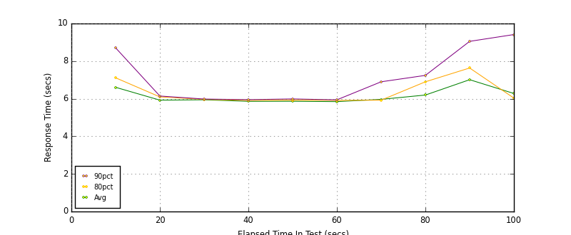
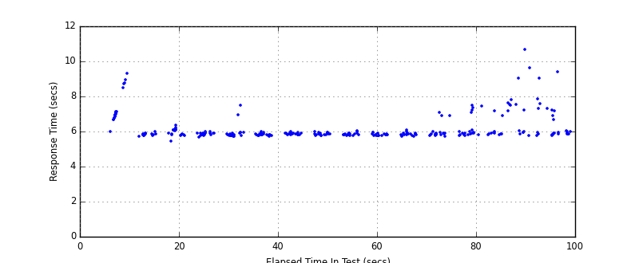
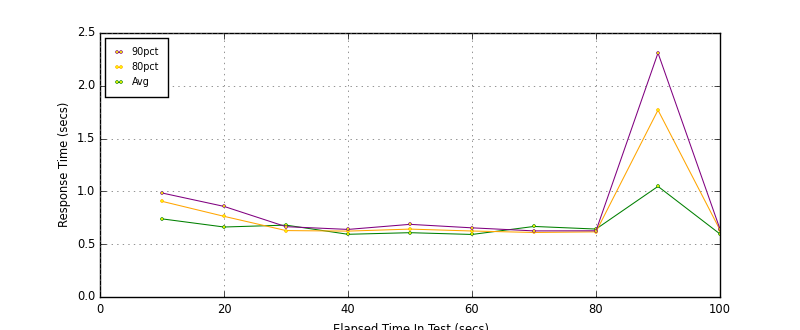
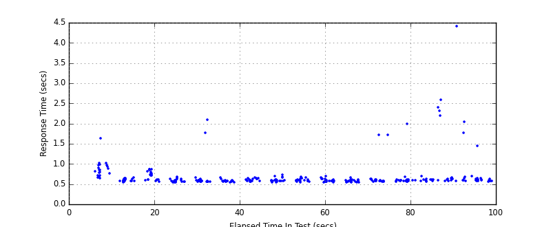
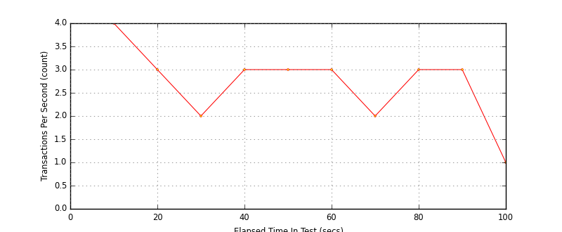
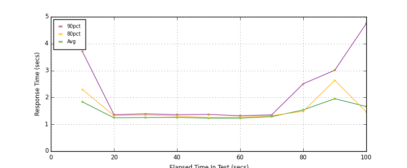
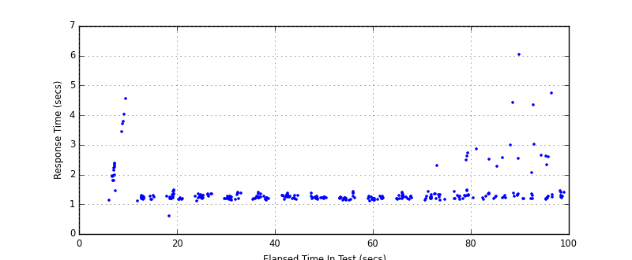

Performance Results Report
Summary
transactions: 334
errors: 0
run time: 100 secs
rampup: 0 secs
test start: 2014-11-04 16:26:26
test finish: 2014-11-04 16:27:58
time-series interval: 10 secs
workload configuration:
| group name | threads | script name |
|---|
| user_group-1 | 10 | v_user.py |
| user_group-2 | 10 | v_user.py |
All Transactions
Transaction Response Summary (secs)
| count | min | avg | 80pct | 90pct | 95pct | max | stdev |
|---|
| 334 | 5.452 | 6.146 | 6.077 | 7.113 | 7.556 | 10.679 | 0.728 |
Interval Details (secs)
| interval | count | rate | min | avg | 80pct | 90pct | 95pct | max | stdev |
|---|
| 1 | 40 | 4.00 | 5.737 | 6.606 | 7.111 | 8.705 | 8.948 | 9.325 | 1.008 |
| 2 | 35 | 3.50 | 5.452 | 5.923 | 6.096 | 6.142 | 6.205 | 6.360 | 0.174 |
| 3 | 29 | 2.90 | 5.719 | 5.943 | 5.963 | 5.982 | 6.952 | 7.497 | 0.370 |
| 4 | 36 | 3.60 | 5.725 | 5.860 | 5.910 | 5.950 | 5.978 | 6.014 | 0.066 |
| 5 | 39 | 3.90 | 5.761 | 5.864 | 5.927 | 5.988 | 5.998 | 6.067 | 0.071 |
| 6 | 33 | 3.30 | 5.749 | 5.846 | 5.909 | 5.940 | 5.992 | 6.086 | 0.076 |
| 7 | 28 | 2.80 | 5.712 | 5.965 | 5.924 | 6.900 | 6.917 | 7.075 | 0.359 |
| 8 | 31 | 3.10 | 5.779 | 6.195 | 6.899 | 7.240 | 7.473 | 7.479 | 0.588 |
| 9 | 33 | 3.30 | 5.784 | 7.011 | 7.633 | 9.050 | 9.619 | 10.679 | 1.248 |
| 10 | 10 | 1.00 | 5.847 | 6.277 | 6.033 | 9.412 | 9.412 | 9.412 | 1.104 |
Graphs
Response Time: 10 sec time-series

Response Time: raw data (all points)

Throughput: 5 sec time-series

Custom Timer: Load_Front_Page
Timer Summary (secs)
| count | min | avg | 80pct | 90pct | 95pct | max | stdev |
|---|
| 314 | 0.543 | 0.689 | 0.658 | 0.797 | 1.016 | 4.420 | 0.359 |
Interval Details (secs)
| interval | count | rate | min | avg | 80pct | 90pct | 95pct | max | stdev |
|---|
| 1 | 40 | 4.00 | 0.547 | 0.740 | 0.906 | 0.985 | 1.031 | 1.641 | 0.209 |
| 2 | 35 | 3.50 | 0.546 | 0.663 | 0.764 | 0.858 | 0.873 | 0.873 | 0.107 |
| 3 | 29 | 2.90 | 0.555 | 0.681 | 0.629 | 0.666 | 1.781 | 2.097 | 0.352 |
| 4 | 36 | 3.60 | 0.543 | 0.594 | 0.624 | 0.640 | 0.648 | 0.669 | 0.029 |
| 5 | 39 | 3.90 | 0.547 | 0.609 | 0.643 | 0.688 | 0.692 | 0.728 | 0.043 |
| 6 | 33 | 3.30 | 0.547 | 0.592 | 0.625 | 0.655 | 0.661 | 0.695 | 0.038 |
| 7 | 28 | 2.80 | 0.544 | 0.668 | 0.611 | 0.626 | 1.715 | 1.729 | 0.298 |
| 8 | 31 | 3.10 | 0.556 | 0.643 | 0.617 | 0.627 | 0.696 | 2.001 | 0.254 |
| 9 | 33 | 3.30 | 0.572 | 1.048 | 1.770 | 2.311 | 2.589 | 4.420 | 0.881 |
| 10 | 10 | 1.00 | 0.554 | 0.597 | 0.635 | 0.643 | 0.643 | 0.643 | 0.028 |
Graphs
Response Time: 10 sec time-series

Response Time: raw data (all points)

Throughput: 10 sec time-series

Custom Timer: Search
Timer Summary (secs)
| count | min | avg | 80pct | 90pct | 95pct | max | stdev |
|---|
| 314 | 0.610 | 1.438 | 1.369 | 2.001 | 2.614 | 6.039 | 0.619 |
Interval Details (secs)
| interval | count | rate | min | avg | 80pct | 90pct | 95pct | max | stdev |
|---|
| 1 | 40 | 4.00 | 1.125 | 1.835 | 2.299 | 3.704 | 4.032 | 4.549 | 0.903 |
| 2 | 35 | 3.50 | 0.610 | 1.242 | 1.321 | 1.359 | 1.451 | 1.484 | 0.137 |
| 3 | 29 | 2.90 | 1.134 | 1.253 | 1.351 | 1.390 | 1.391 | 1.395 | 0.083 |
| 4 | 36 | 3.60 | 1.140 | 1.257 | 1.307 | 1.359 | 1.384 | 1.408 | 0.065 |
| 5 | 39 | 3.90 | 1.136 | 1.230 | 1.256 | 1.369 | 1.385 | 1.423 | 0.064 |
| 6 | 33 | 3.30 | 1.118 | 1.229 | 1.267 | 1.319 | 1.371 | 1.403 | 0.065 |
| 7 | 28 | 2.80 | 1.133 | 1.286 | 1.321 | 1.353 | 1.441 | 2.311 | 0.212 |
| 8 | 31 | 3.10 | 1.163 | 1.535 | 1.486 | 2.508 | 2.727 | 2.856 | 0.533 |
| 9 | 33 | 3.30 | 1.164 | 1.954 | 2.638 | 3.013 | 4.423 | 6.039 | 1.165 |
| 10 | 10 | 1.00 | 1.212 | 1.660 | 1.463 | 4.750 | 4.750 | 4.750 | 1.089 |
Graphs
Response Time: 10 sec time-series

Response Time: raw data (all points)

Throughput: 10 sec time-series